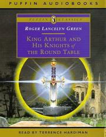

By Roger Lancelyn Green
After Uther Pendragon's death, Merlin the druid, forms a stone and in it a sword. On this sword is written that anyone who could pull it out of the stone would be the new king of England. After many years, the young Arthur, the secretly son of Pendragon, pulls this magical sword out of the stone, so he is the new king of England. Together with Merlin he built makes a round table, where only the best knights of England should sit there. So more and more knights come to be a knight of the table, and each of them has his own adventures.
After many years the last knight comes to the court of Arthur, to Camelot. The holy knight Sir Galahad, the son of Sir Lancelot. With his coming all knights ride around whole Europe for the search of the holy grail of Jesus Christ. Only four knights see the grail: Sir Lancelot, Sir Parcivale, Sir Bors de Gannis and Sir Galahad.
After the grail is found the last battle is near for the round table. In this battle many knights die and with them King Arthur, his nephew Sir Gawain and also the wicked son of King Arthur and his sister Morgana le Fay, Mordred.
King Arthur is buried at Avalon, the secret island of the druids and damsels.
Roger (Gilbert) Lancelyn Green (2 November 1918 – 8 October 1987) was a British biographer and children's writer. He was an Oxford academic who formed part of the Inklings literary discussion group along with C. S. Lewis and J. R. R. Tolkien.
Green became known primarily for his writings for children, particularly his retellings of the myths of Greece (Tales of the Greek Heroes and The Tale of Troy) and Egypt (Tales of Ancient Egypt), as well the Norse mythology (The Saga of Asgard, later renamed Myths of the Norsemen) and the stories of King Arthur (King Arthur and His Knights of the Round Table) and Robin Hood (The Adventures of Robin Hood). His works of original fiction include The Luck of Troy, set during the Trojan War, and The Land of the Lord High Tiger, a fantasy that has been compared to the Narnia books.